7 job(s) · 13 item(s) · Baker Production QC
Flash frame in only 2 of ~25 rooms, and about 2 stops under
Whites sat ~2 stops below clipping (target ~1). The flash frame came out no brighter than the 0EV ambient, so it isn't adding light and the editor has to push it (greys the darks). Fix: flash frame every room, +1 stop or ISO 640→1250 at 1/160 f/9, bounce off the ceiling behind you.
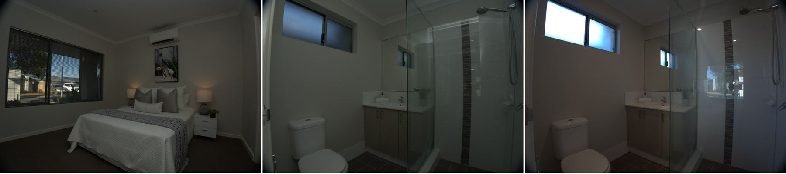
Fronts in tree shade
The street tree shades the house and cuts into the frame. Try another angle, step back, or come when the facade is lit.
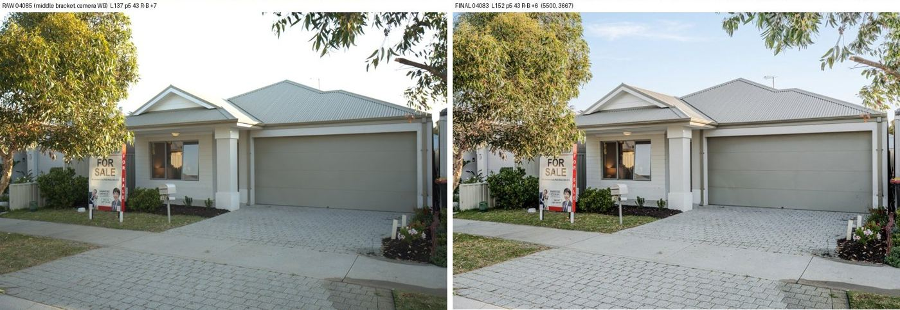
Harsh sun in the bathrooms and study
Window light flooding the bath/glass and a big hotspot on the study wall. Close blinds or shoot away from direct sun.
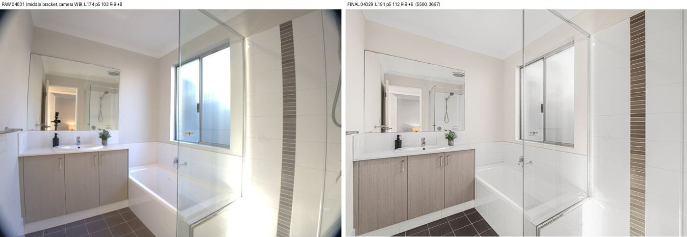
Near-identical pool shots delivered
DSC06700 and DSC06705 are almost the same frame – pick one before sending to the editor.
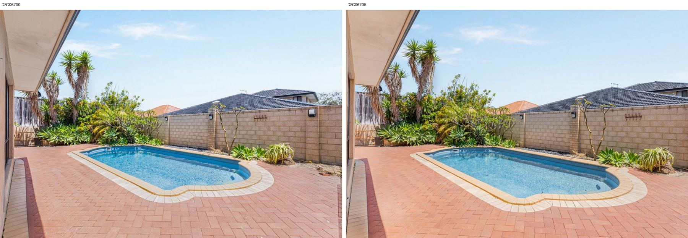
Mixed image sizes
Set has 5500px and 6000px files – two bodies or crop settings. Keep one setting per job.
Five empty bedrooms from the same corner
Vary the angle (window wall, through the doorway) or deliver fewer. DSC02704 sink shot is an awkward tight crop.
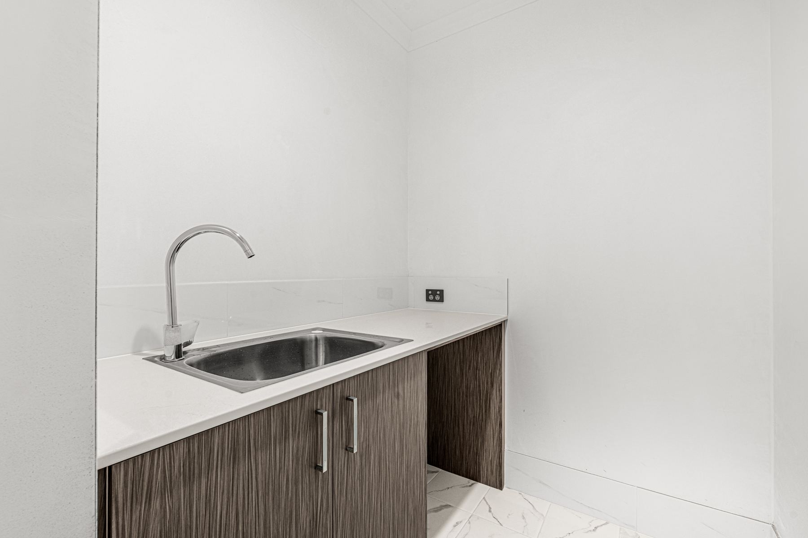
Duplicate delivered
DSC08742 and DSC08748 are the same angle – pick one.
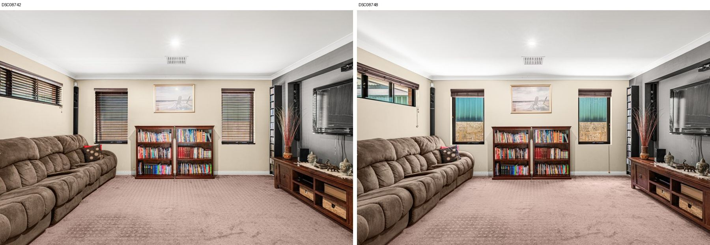
Duplicate delivered
DSC08323 and DSC08355 are the same angle – pick one.
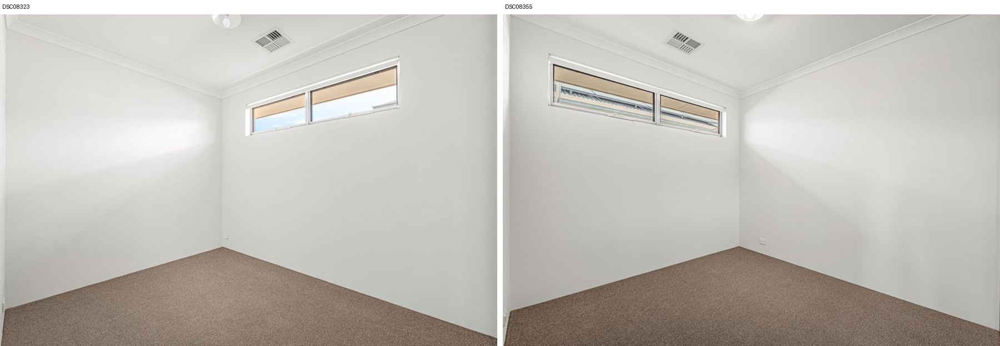
Duplicate delivered
DSC06886 and DSC06891 are the same angle – pick one.
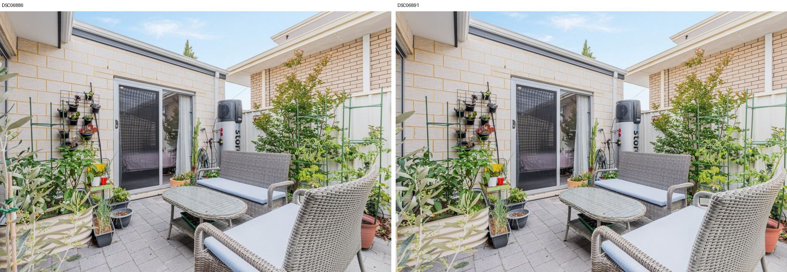
Flash frame in every room – good. But 2–3 stops under
Sony a6400 at ISO 400, 1/160 f/9: brightest whites 2.1–3.1 stops below clipping (target ~1). Raise flash power or ISO 800 and bounce off the ceiling.
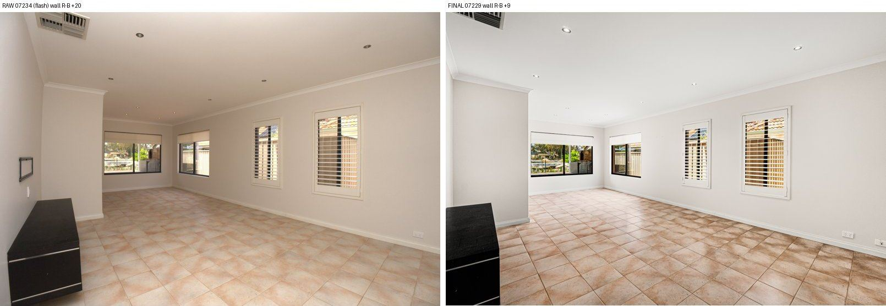
Flash frame white balance set warm
Flash frames come out yellow (white balance not set to flash/daylight). Set WB to Flash or 5500K so the flash frame shows true colour.
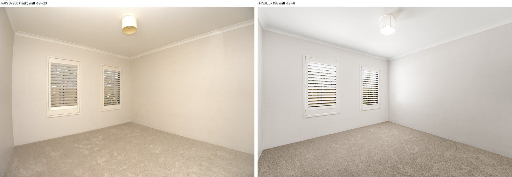
Photographer visible in the bathroom mirror
Editor removed it this time – shoot from the side of the mirror or lower so you're not in the reflection.
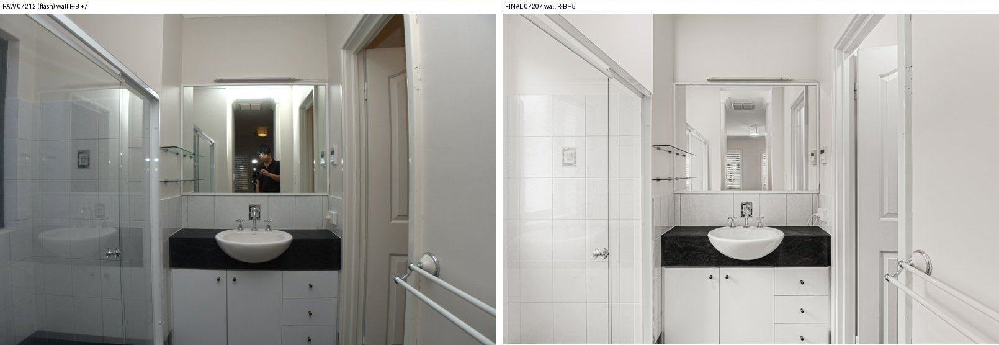
Too many near-duplicate angles
45 photos with several near-identical pairs (living 8/9, 10/11, kitchen 16/17, upstairs 42/43, 44/45, five alfresco angles). Deliver the best 30–35.